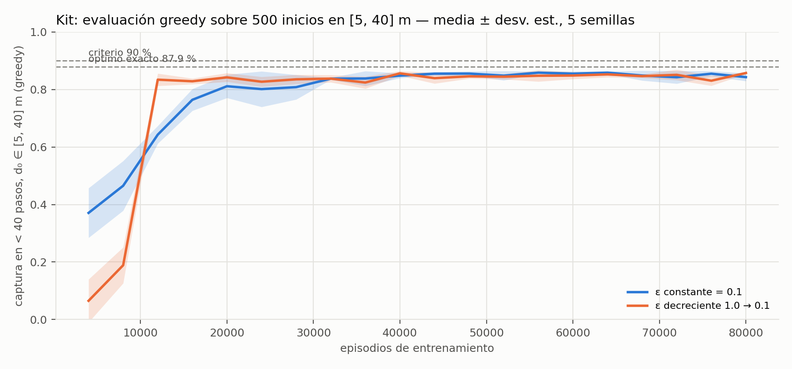
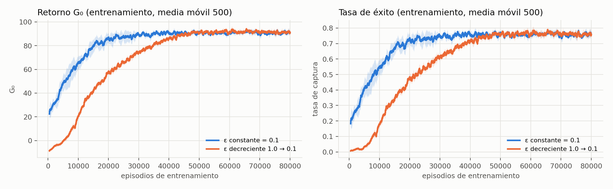
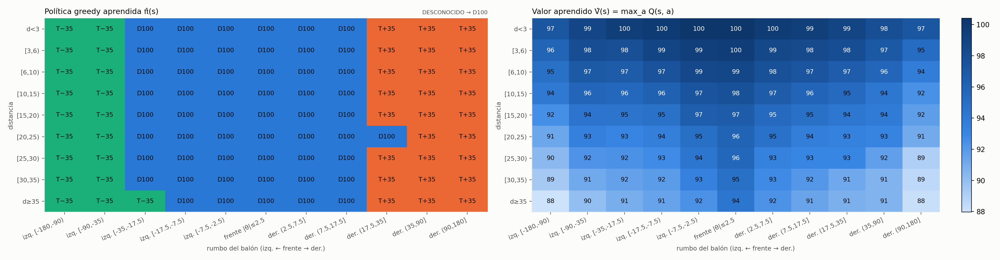
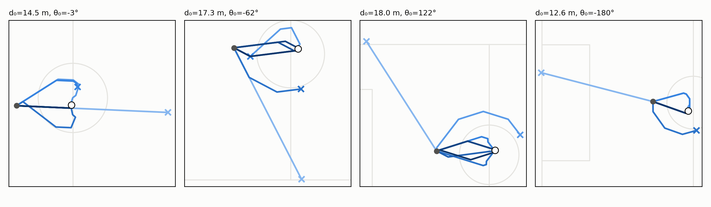
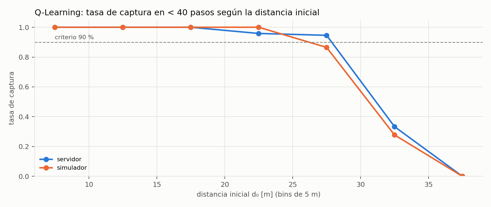

DS5345 · Aprendizaje por Refuerzo · 2026-II
Persecución e intercepción de balón en RoboCup 2D con Q-Learning tabular
Grupo N° 1 — Leonardo Candio · Dimael Rivas
Docente: Percy W. Lovón Ramos · UTEC
MDP con 99 estados y 396 valores Q · 80 000 episodios por corrida con 5 semillas · validación en vivo contra rcssserver · github.com/artrivas/RL-Project
01 La tarea: interceptar un balón inmóvil
- RoboCup 2D: el jugador ejecuta un comando por ciclo de 100 ms, así que 40 pasos = 4 segundos de juego.
- Parte de posición y orientación arbitrarias con el balón quieto a $d_0 \in [5, 40]$ m; debe capturarlo ($d \le 0.8$ m) en el menor tiempo posible.
- Criterio del enunciado: tasa de captura > 90 % en menos de 40 pasos.
- Entorno principal: cinemática exacta del starter kit del curso, sin inercia ni ruido, con observación verdadera de $(d, \theta)$.
$$\texttt{DASH } p:\ \mathbf{x} \mathrel{+}= \ell_p\,(\cos\phi,\ \sin\phi),\quad \ell_{100}=1\ \text{m},\ \ell_{50}=0.5\ \text{m}$$
$$\texttt{TURN } {\pm}35:\ \phi \mathrel{+}= {\pm}\,35^\circ$$
Distribución de entrenamiento$d_0$ uniforme en [5, 40] m, con posición y orientación arbitrarias; también evalúa.
Reset del kitJugador cerca de $(-15, 0)$ y balón en el centro: $d_0 \approx 11$–19 m.
02 Formulación del MDP
$$\mathcal{M} = \langle \mathcal{S},\ \mathcal{A},\ \mathcal{P},\ \mathcal{R},\ \gamma \rangle$$
- Estados: $s = \big(b_d(d),\ b_\theta(\theta)\big)$ más un estado terminal de captura: 9 zonas de distancia × 11 sectores de rumbo.
- Acciones: $\mathcal{A} = \{\texttt{DASH 100},\ \texttt{DASH 50},\ \texttt{TURN +35},\ \texttt{TURN -35}\}$.
- Transiciones: deterministas sobre $(\mathbf{x}, \phi)$; sobre los bins, $\mathcal{P}(s' \mid s, a)$ es estocástica.
$$|\mathcal{S}| = 9 \times 11 = 99, \qquad |\mathcal{Q}| = 99 \times 4 = 396$$
- El bin no guarda la posición exacta: un
TURN +35pone al frente un balón a $30^\circ$, pero no uno a $80^\circ$, aunque estén en el mismo sector. - Es aliasing de estados: $\mathcal{S}$ es una aproximación, no un estado de Markov exacto.
03 Recompensa, retorno y descuento
$$r_t = (d_t - d_{t+1}) - 0.2 + 100 \cdot \mathbf{1}\{d_{t+1} \le 0.8\}$$
$$G_0 = \sum_{t=0}^{T-1} \gamma^{t} r_t \ \overset{\gamma = 1}{=}\ (d_0 - d_T) - 0.2\,T + 100 \cdot \mathbf{1}\{\text{captura}\}$$
- La recompensa es la del enunciado; con captura, $d_T$ es casi constante, así que maximizar $G_0$ equivale a capturar en menos pasos.
- Truncación en $T_{\max} = 40$ con bootstrap desde $s'$: el tiempo no forma parte del estado.
Bono con $\gamma = 0.99$67.6$100 \cdot 0.99^{39}$ en el paso 39
Con $\gamma = 0.9$1.6$100 \cdot 0.9^{39}$: el bono se evapora
04 Discretización del estado (R3)
| Componente | Bordes de los bins |
|---|---|
| Rumbo $b_\theta$ | $\pm 2.5^\circ$, $\pm 7.5^\circ$, $\pm 17.5^\circ$, $\pm 35^\circ$, $\pm 90^\circ$ |
| Distancia $b_d$ | 3, 6, 10, 15, 20, 25, 30, 35 m |
$$\theta_{\text{tol}} = \arcsin(0.8 / d)$$
- La tolerancia angular de captura es $\theta_{\text{tol}}$: 4.6° a 10 m, 2.3° a 20 m, 1.5° a 30 m, por eso los sectores son finos cerca del frente.
- $17.5^\circ$ es la mitad del giro de $35^\circ$ (el error máximo tras girar), $35^\circ$ es un giro completo y $90^\circ$ separa delante de detrás.
- Cada zona de distancia equivale a 3–5 pasos frente al presupuesto de 40; más finas cerca, donde se decide la maniobra final.
05 Q-Learning y estrategia de exploración
$$Q(s, a) \leftarrow Q(s, a) + \alpha \Big[ r + \gamma \max_{a'} Q(s', a') - Q(s, a) \Big]$$
- Acciones $\varepsilon$-greedy con desempate al azar y sin bootstrap en estados terminales.
- Dos exploraciones con el mismo nivel final: constante frente a decaiente.
- Q-Learning, SARSA y Monte Carlo first-visit terminan empatados dentro del ruido ($\approx 85$ %); se reporta Q-Learning.
$$\varepsilon_k = \max(0.1,\ 1.0 \cdot d^k),\qquad d = 0.999952$$
Tasa de aprendizaje0.1$\alpha$ fijo
Descuento0.99$\gamma$ fijo
Corrida80 000episodios por condición
Semillas5por condición
El decaimiento llega a $\varepsilon = 0.1$ al 60 % del presupuesto; la evaluación greedy usa $\varepsilon = 0$.
06 Diseño experimental
1 Entrenar con $d_0 \in [5, 40]$ m
→
2 Evaluar la política greedy cada 4 000 episodios sobre 500 inicios fijos
→
3 Evaluar la Q-table final sobre 500 inicios del reset del kit
→
4 Ejecutar en vivo en rcssserver (200 episodios por distribución)
Fidelidad al kit89.2 % ± 17.2Configuración del notebook del kit (MC first-visit, 3 500 episodios) en 8 semillas: entre 44.8 % y 100 %. Una sola semilla no es representativa.
Óptimo exacto (A*)87.9 %Mínimo exacto de pasos sobre todas las secuencias de acciones, con heurística admisible, 1 000 inicios y ningún caso indeterminado.
$$\hat{p} = \frac{1}{N} \sum_{i=1}^{N} \mathbf{1}\{T_i < 40\}$$
- Métrica principal: tasa de capturas en menos de 40 pasos; además, pasos medios y retorno $G_0$.
- Se guardan Q-table, historial y configuración de cada corrida.
07 Ablación de la exploración
| Exploración | Final [5, 40] m | 70 % / 80 % (episodios) | Reset kit | Pasos |
|---|---|---|---|---|
| $\varepsilon$ decreciente | 0.857 ± 0.003 | 12k / 12k–16k | 1.000 | 19.1 |
| $\varepsilon = 0.1$ constante | 0.843 ± 0.013 | 16k / 16k–32k | 1.000 | 19.3 |
| Óptimo exacto (A*) | 0.879 | — | 1.000 | 18.6 |
Q-Learning, R3, evaluación greedy, 5 semillas. Con el decreciente, $G_0 = 104.1$ con 26.3 pasos; con el constante, $G_0 = 102.2$ con 26.6.

El decreciente alcanza el 80 % en 12 000–16 000 episodios; el constante necesita 16 000–32 000 y termina 1.4 pp más abajo. Ninguna política supera el techo de 87.9 %.
08 Retorno y éxito durante el entrenamiento

Con exploración $\varepsilon$ decreciente, $G_0 = 104.1$ con 26.3 pasos; con constante, $G_0 = 102.2$ con 26.6. Las curvas de entrenamiento quedan por debajo de la evaluación greedy porque siguen explorando.
09 Política y valor aprendidos

DASH 100 cuando el balón está entre −35° y +17.5°; fuera de esa ventana, gira hacia él. La ventana es más ancha que un giro de 35°, así que tras girar el balón queda dentro y la política no oscila.10 Trayectorias: de erráticas a casi rectas

La corrección fina no la aporta un estado especial: es geométrica. Al acercarse con un error pequeño, el rumbo del balón crece hasta cruzar el umbral de $17.5^\circ$ y el agente gira.
11 ¿Por qué no obtenemos mejores resultados?
- El presupuesto de 40 pasos no alcanza. Con 1 m por paso, un balón a 35–40 m consume casi todo el horizonte: el óptimo captura apenas el 18.7 % de esos inicios. El 90 % en [5, 40] m es inalcanzable para cualquier política.
- Brecha de la representación tabular. 85.7 % frente a 87.9 %: hasta 30 m capturamos el 100 %, la diferencia está en 30–40 m, donde el óptimo usa maniobras precisas.
- La física del kit no es la del servidor. En
rcssserverel avance crece de 0.6 a 1 m por ciclo, el giro se reduce con la velocidad, hay ruido y visión parcial.
Rejillas comparadas en [5, 40] m (5 semillas)
Rejilla del kit (20 estados)56.6 %
Nuestra v1 (20 estados)61.0 %
R3 (99 estados)84.7 %
R4 (150 estados)81.0 %
Refinar más no ayuda: R4 necesita más datos de los que da el presupuesto de 80 000 episodios.
12 Transferencia a rcssserver

Política del kit en vivo · reset kit26.0 % ± 3.120.5 % ± 2.9 en [5, 40] m
Reentrenada con física del servidor · [5, 40] m73.5 % ± 3.171.5 % en su simulador
- Nuestro simulador con la física del servidor da 26.0 % y 21.0 %: la caída se debe a la física, no a la conexión.
- 0 comandos perdidos y 0 errores de reset en 200 episodios; prueba de 500 episodios seguidos sin errores de socket.
La misma política pasa del 26 % al 73.5 % cuando se entrena con la física real del servidor: el entorno, no el algoritmo, es el cuello de botella.
13 Conclusiones y trabajo futuro
100 %Reset del kit: 19.1 pasos (óptimo exacto: 18.6), en las 5 semillas
85.7 %[5, 40] m: el 97.5 % del techo exacto de 87.9 %
73.5 %En vivo con física del servidor y política reentrenada
- Formulación: MDP tabular de 99 estados con discretización justificada por la tolerancia angular de captura y el giro de 35°.
- Exploración: el $\varepsilon$ decreciente aprende antes y es más estable que el constante.
- Criterio: cumplido con el reset del kit; en [5, 40] m el 90 % no es alcanzable para ninguna política.
- Transferencia: ejecución verificada en
rcssservery reentrenamiento con su física. - Otras tareas del catálogo: MDP formulados con tablas de 216 a 1 296 valores Q (conducción 432, tiro 216, 2v1 1 296), pendientes de implementar.
- P2: DQN/PPO continuos sobre $(d, \theta, v)$, entrenar con la física del servidor y recompensa consistente con el descuento.